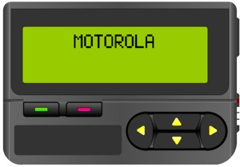


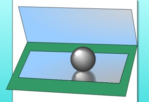


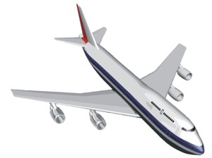


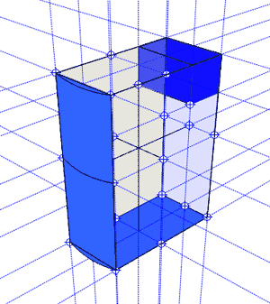
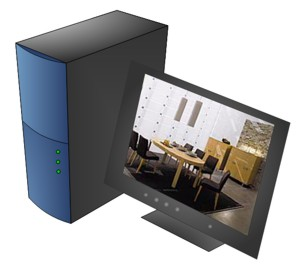

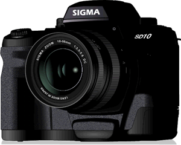
Used application: Microsoft Visio 2002, CorelDRAW 10 (selection and a vectoring of fonts), GWColor (selection of colors).
Time of drawing: 6 hours.
Quantity of shapes: 90.
It was created by a method manual pricking.
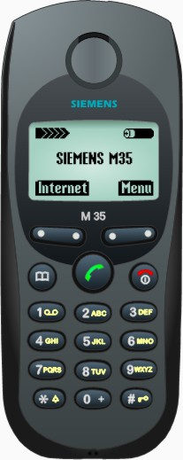
Used application: Microsoft Visio 2002, GWColor (подбор цветов).
Time of drawing: 2 hours.
Quantity of shapes: 52.
It was created in an isometry.
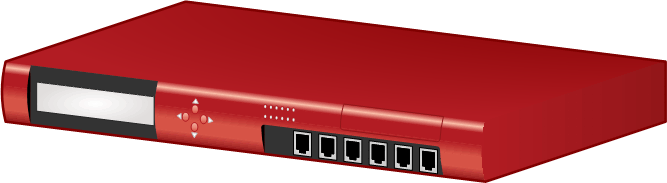
Used application: Microsoft Visio 2002, CorelDRAW 10 (selection and a vectoring of fonts), GWColor (selection of colors).
Time of drawing: 8 hours.
Quantity of shapes: 283.
It was created by a method manual pricking. In work receptions of creation gradient fill by an arch (between buttons) were used.
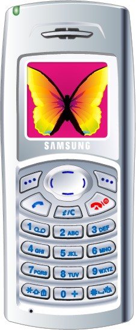
Used application: Microsoft Visio 2002, DotColor 3.0 (selection of colors).
Time of drawing: 2 hours.
Quantity of shapes: 400.
In work receptions asymmetrical sample fill were used.

Used application: Microsoft Visio 2002, DotColor 3.0 (selection of colors).
Time of drawing: 2 hours.
Quantity of shapes: 65.
It was created by a method manual pricking. In work the normal vector shadow has been made.

Used application: Microsoft Visio 2003, DotColor 3.0 (selection of colors).
Time of drawing: 7 hours.
Quantity of shapes: 234.
It was created by a method manual pricking.
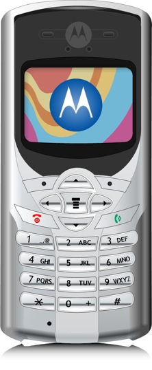
Used application: Microsoft Visio 2003, DotColor 3.0 (selection of colors).
Time of drawing: 4 hours.
Quantity of shapes: 176.
It was created by a method manual pricking. The most complex element - wheel disks. They of the complex form and on them hour has left almost.
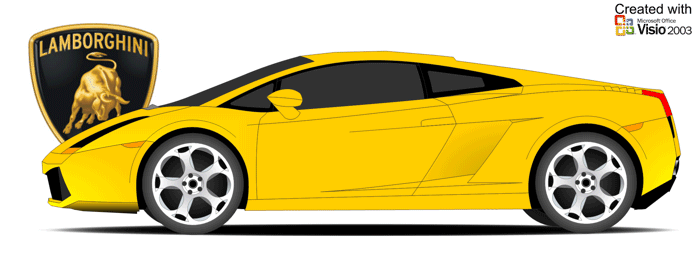
Used application: Microsoft Visio 2003, DotColor 3.0 (selection of colors).
Time of drawing: 14 hours.
Quantity of shapes: 168.
It was created by a method manual pricking.